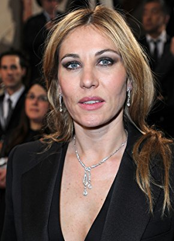

#8971 Willkommen in der Bretagne

 IMDB-Wertung: 4.9 / 10
IMDB-Wertung: 4.9 / 10  Metascore: 0
Metascore: 0 
In Carhaix, einer kleinen Stadt im Herzen der Bretagne, leben die Freundinnen Mat-hilde, Firmine und Louise. Während Mathilde und Firmine als Hebamme und Krankenschwester arbeiten, ist Louise die stolze Besitzerin einer Bowling-Halle, in der sich die drei oft am Feierabend treffen. Bald bekommt das Bowling-Trio Zuwachs von Catherine, einer Personalmanagerin, die aus Paris geschickt wurde, um die Rentabilität des Krankenhauses zu prüfen. Schnell lebt sich die Großstädterin Catherine in der französischen Provinz ein und lernt die Herzlichkeit und Ehrlichkeit der Menschen zu schätzen. Doch schon bald ahnt sie, dass sie im Zuge der Umstrukturierung ausgerechnet die Geburtenstation schließen muss. Dagegen protestiert kurz darauf die ganze Stadt - allen voran die Freundinnen Mathilde, Firmine und Louise. Und auch Catherine erkennt, dass es hier um weit wichtigere Werte geht als um reine Erträge. Gemeinsam geben sie alles, um die Geburtenstation zu retten!
Jahr: 2012
Dauer: 90 Minuten
FSK: 0
Land: Frankreich Studio: Alamode FilmTonspuren:
Untertitel:
Auflösung: 1080p (1920x1040) Größe: 4485 MB
Genre: Komödie
Regisseur: Marie-Castille Mention-Schaar
Drehbuch: Marie-Castille Mention-Schaar
Soundtrack: Erwann Kermorvant
Darsteller:
 Catherine Frot als Catherine
Catherine Frot als Catherine-  Mathilde Seigner als Mathilde
- Firmine Richard als Firmine
- Laurence Arné als Louise
- François Bureloup als Yves
- Mathias Mlekuz als Erwann
- Geneviève Mnich als Mme Escoffier
- Frédéric Noaille als Paul
- Julien Crampon als Gaël
- Gilles Bataille als Le directeur de l'hôpital
- Éric Naggar als Henri
- Samuel Chauvin als Maël
- Kiliann Lorguilloux als Merlin
- Georges Cadoudal als Georges
- Florence Mestais als Angélique
- Anne Pia als Secrétaire sous-préfet
- Roland Lancelot als Sous-préfet Quimper
- Maïwenn Finont als Maïwenn
- Delphine Samedy als Delphine
- Catherine Riaux als Secrétaire Catherine
- Vladys Muller als Jeune maman
- Katell Borvon als Florence
- Joël Pyrene als Chauffeur de taxi
- Gaelle Hausermann als Madame Blanc
- Xavier Goulard als Docteir Diaz
- Véronique Rousseau als Rennaise 1
- Servane Le Gall als Rennaise 2
- Pascal Ralite als Arbitre finale
- Aude Lorguilloux als Jeune fille mairie
- Richard Rouille als Avocat
- Eric Toisier als Arbitre championnat
- Claire Chiron als Commerçante
- Mireille Fafra als Secrétaire directeur
- Malo d'Hervé als Enfant Angélique
- Martin Cannavo als
- Alex Lutz als L'examinateur
- Solenn De la Turmelière als Collectif des Femmes Enceintes
- Morgane Le Rest als Collectif des Femmes Enceintes
- Magali Moreau als Collectif des Femmes Enceintes
- Fabienne Boulzennec als Collectif des Femmes Enceintes
- Soizic Contant als Collectif des Femmes Enceintes
- Virginie Hesnault als Collectif des Femmes Enceintes
- Florence Hay als Collectif des Femmes Enceintes
- Josiane Herviou als Collectif des Femmes Enceintes
- Delphine Le Coz als Collectif des Femmes Enceintes
- Eva Monfort als Collectif des Femmes Enceintes
- Séverine Valonet als Collectif des Femmes Enceintes
- Yvonne Gradelet als Zoé, une manifestante (uncredited)
Datei: X:\2012(N-Z)\Willkommen in der Bretagne (2012, FSK0, 1920x1040).mkv seit 16.05.2018
Festplatte: HD 2012(N-Z)-2013(A-H)
 Es gibt insgesamt 138 Filme in der Gruppe '2012(N-Z)'
Es gibt insgesamt 138 Filme in der Gruppe '2012(N-Z)'